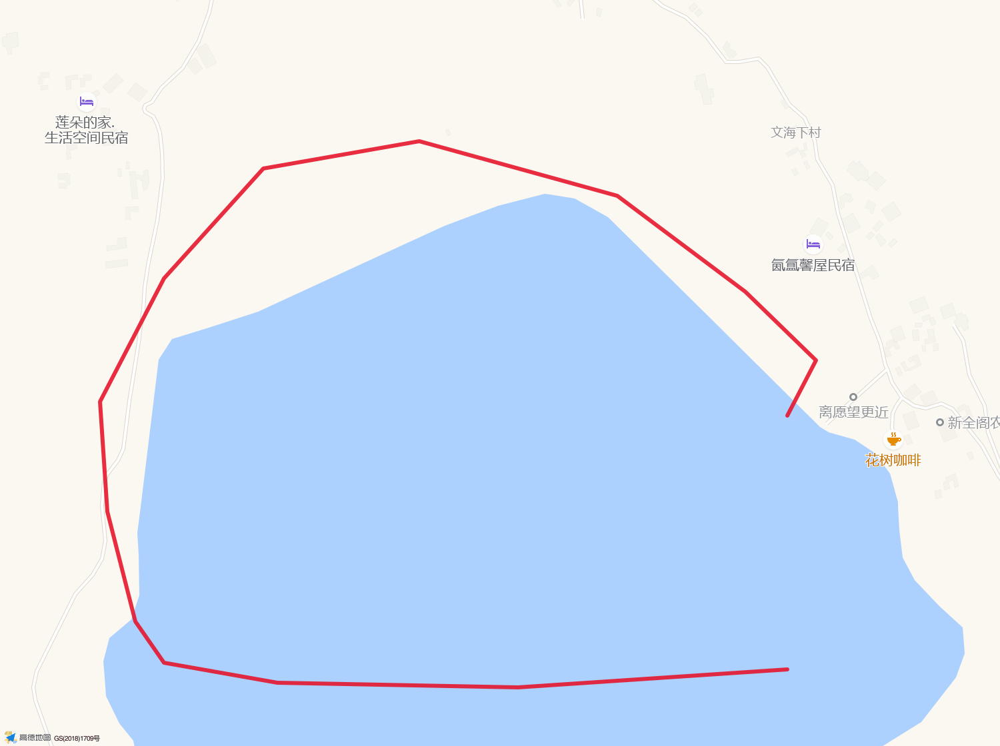

10/3
10/4
10/5
10/6
10/7
10/8
10/9
10/10
10/11
10/12
10/13
10/14
10/15
10/16
10/17
🚗 云南自驾 15天
石家庄 → 西安 → 西昌 → 泸沽湖 → 丽江 → 香格里拉 → 昆明 → 重庆 → 恩施 → 洛阳 → 石家庄
📅 10月3日 ~ 10月17日 · 3人 + 🐕
Day 1 · 10/3 周六
石家庄 → 西安
780km · 9h
🚗 导航地点
▶
🏨 乙龙酒店（西安灞桥区东城大道店）
住宿
¥257 · 高速口旁，方便明天一早继续南下
📍 高德导航到酒店
⚡
充电：
蔚景云充电站（和谐家园建材小区内，酒店门口）·24h
⚡ 导航到充电站
📝 行程详情 & 注意事项
▶
💡 小贴士
避开郑州国庆拥堵，走 G5 京昆直下。到西安吃个夜宵就睡，第二天 5 点还要出发。
📋 路线
石家庄 → G20青银高速 → G5京昆高速 → 西安灞桥出口
⏰ 时间安排
13:00 石家庄出发 → 服务区休息 2-3 次 → 约 22:00-22:30 到西安
🍽️ 吃饭地点
▶
（暂未补充，D1 以赶路为主，西安夜宵可自由选择）
Day 2 · 10/4 周日
西安 → 西昌
1164km · 16h
🚗 导航地点
▶
🏨 闲居（邛海17度店）
住宿
¥437 · 邛海边，晚上可以散步看湖
📍 高德导航到酒店
⚡
充电：
邛海17度B区充电桩（同小区内，零距离）·24h
⚡ 导航到充电站
📝 行程详情 & 注意事项
▶
⚠️ 重要注意事项（务必看）
🚗 全程最长最累的一天！纯驾驶 14.2h，含休息约 16h。建议两人轮流开，每 2h 必须休息。
📋 路线
西安 → G5京昆高速 → 汉中 → 广元 → 绵阳 → 成都绕城 → G5 → 西昌
⏰ 时间安排
5:00 出发 → 服务区休息 4 次（汉中/广元/绵阳/成都）→ 约 21:30-22:00 到西昌
🍽️ 吃饭地点（3 家烧烤按距离排序）
▶
🔥 烤度·黑香猪火盆烧烤
同小区·最近
邛海17度9栋1单元114号·16:30-24:00·⭐4.4·人均¥71·**~100m 同小区**
📍 高德导航到烤度
🍢 小渔村徐记串烧夜宵
老字号·⭐4.6
油碾路·17:30-01:30·人均¥53·~1.1km
📍 高德导航到徐记串烧
🐷 甘洛烤猪（乐荟城店）
与徐记同街
油碾路27号·18:00-02:00·⭐4.3·人均¥68·~1.1km
📍 高德导航到甘洛烤猪
⚠️ 3 家均需线下排号，国庆火爆！烤度"5-9点翻5-6次台"，建议到店先取号。
Day 3 · 10/5 周一
西昌 → 泸沽湖
273km · 7.5h
🚗 导航地点
▶
🏨 白马轻奢湖景民宿
住宿
2晚¥1295 · 湖景房，推窗见湖
📍 高德导航到民宿
⚡
充电：
白马轻奢民宿内慢充（酒店自有桩，零距离，过夜慢充最方便）
⚡ 导航到民宿充电桩
🏞️ 泸沽湖景区（大洛水）
景点
门票 70 元/人，下午环湖
📍 高德导航到泸沽湖
📝 行程详情 & 注意事项
▶
💡 小贴士
G348 国道山路弯多，均速仅 ~41km/h，别开太快。下午到了直接环湖。
📋 路线
西昌邛海 → G5京昆高速(南下15km) → 西昌南收费站下高速 → G348国道 → 盐源 → 泸沽湖
⏰ 时间安排
8:00 出发 → 11:00 盐源吃午饭 → 12:00 继续 → 约 15:30 到泸沽湖
🍽️ 盐源午餐（按路线经过顺序）
▶
🍚 云川家常菜馆（先经过）
家常川菜
杨柳桥S307/093县道口·09:30-22:30·⭐4.4·人均¥34·**距西昌115.6km 先到**
📍 高德导航到云川家常菜
🌶️ 兄弟盐帮菜（后经过·去泸沽湖顺路）
盐帮菜
盐井镇泸沽湖大道05-C-2·10:30-22:30·⭐4.0·人均¥37·**距西昌124.7km 后到**
📍 高德导航到兄弟盐帮菜
💡 两家相距约 9km，**推荐云川（先到，最顺路）**。如果时间宽裕想试盐帮菜可继续到兄弟盐帮菜（吃完出发去泸沽湖更顺）。
🍽️ 大落水村晚餐（按村内步行可达排序，第4家需开车）
▶
🐟 菌香小院·蒸汽石锅鱼·野生菌
石锅鱼
大洛水村母系缘酒店旁·09:00-22:30·⭐4.7·人均¥68·**洋芋锅巴饭必点，需排队建议17:30前去**
📍 高德导航
🔥 摩梭火焰烧烤
烧烤
大落水停车场往篝火晚会方向50米·11:00-23:30·⭐4.5·人均¥71
📍 高德导航
🐟 雨晨石锅鱼
石锅鱼
环湖公路·10:30-21:30·⭐4.7·人均¥72
📍 高德导航
🥘 泸沽湖乡村生态园
火锅
山垮村·10:00-22:30·⭐4.4·人均¥77·**需开车约5km**
📍 高德导航
Day 4 · 10/6 周二
泸沽湖环湖游
整日休闲
🚗 导航地点
▶
🚶 环湖起点（大洛水）
景点
大洛水 → 里格半岛 → 女神湾 → 草海 → 走婚桥，全程约 70km
📍 高德导航环湖起点
🏨 回酒店：白马轻奢湖景民宿（第二晚）
住宿
环湖结束回大洛水村民宿，车可停民宿（自有慢充桩）
📍 高德导航回民宿
📝 行程详情 & 注意事项
▶
💡 小贴士
🐕 走婚桥和草海最适合遛狗拍照！猪槽船狗不能上。
（待补充：环湖具体路线、坐船点、拍照点、时间安排等）
🍚 环湖午餐（女神湾顺路）
▶
🍚 好人小吃
本地家常
泸沽湖镇赵家湾17组28号·10:30-19:30·⭐4.6·人均¥47·环湖到女神湾正好顺路
📍 高德导航
🍽️ 大落水村晚餐（5家·村内步行可达·可随意挑选）
▶
🐟 摩梭人家菌香土鸡石锅鱼
石锅鱼
大落水村十字路口·09:00-23:30·⭐4.6·人均¥59
📍 高德导航
🍖 阿妈风味·菌香腊猪脚
摩梭菜
艾林酒店左侧·11:00-21:00·⭐4.3·人均¥59·**薄荷排骨/乱刀牛肉好吃**
📍 高德导航
🌶️ 四川味道·特色盐帮菜
川菜
永珍酒店东南门旁·10:00-23:00·⭐4.3·人均¥65
📍 高德导航
🍗 欢乐人家柴火鸡
柴火鸡
摩梭民俗博物馆斜对面·10:00-22:30·⭐4.5·人均¥50
📍 高德导航
🐟 花楼湖景蒸汽石锅鱼
石锅鱼/米线
湖滨路7号·08:00-21:30·⭐4.3·人均¥73·**米线也好吃**
📍 高德导航
Day 5 · 10/7 周三
泸沽湖 → 丽江束河
195km · 4h
🚗 导航地点
▶
🏨 醉花堂客栈（束河古镇店）
住宿
3晚¥948 · 就在古镇里
📍 高德导航到客栈
⚡
充电：
束河古镇3号停车场·南方电网桩（龙泉路与仁里路交叉口，~90m）·24h ⭐4.7
⚡ 导航到充电站
📝 行程详情 & 注意事项
▶
⏰ 时间安排
8:00 出发 → 约 12:00 到束河 → 放行李 → 古镇散步遛狗
🍽️ 吃饭地点（午饭、晚饭都可从下面挑选）
▶
🚶
束河古镇内·步行可达（首选）
🍚 粗茶淡饭（束河北门最近）
家常菜
束河北门牌坊旁瑞幸咖啡边·10:00-22:00·⭐4.1·人均¥71
📍 高德导航
🥬 朵颐菜园
云南菜
仁里路1号·11:00-21:30·⭐4.5·人均¥58
📍 高德导航
🍚 浮娴小锅饭（网红）
云南菜
康普巷30号飞花触水旁·11:30-15:00/17:00-21:00·⭐4.6·人均¥75
📍 高德导航
🍖 滇选云味餐厅（纳西排骨）
滇菜
束河街道淳时新派茶对面·09:30-22:00·⭐4.6·人均¥66
📍 高德导航
🚗
备选·需开车去丽江城区
🍜 李记卤面馆（荣城金街店）
卤面
荣城商业综合体西门北50米·09:00-21:00·⭐4.5·人均¥16
📍 高德导航
Day 6 · 10/8 周四
玉龙雪山
30km · 55min
🚗 导航地点
▶
🏔️ 玉龙雪山（云杉坪）
景点
索道+进山费 280 元/人，海拔 3200m
📍 高德导航到雪山
💧 蓝月谷
景点
雪山脚下的蓝湖，免费，风景绝美
📍 高德导航到蓝月谷
🏨 回酒店：醉花堂客栈（束河古镇店·第二晚）
住宿
约15:00回束河，下山途中或到束河后吃午饭，下午到民宿接狗休整
📍 高德导航回客栈
📝 行程详情 & 注意事项
▶
⚠️ 重要注意事项（务必看）
🏔️ 云杉坪海拔 3200m，比古城高 800m。慢点走，带氧气瓶，别剧烈运动，注意高反。
🐕 索道不让带狗，早上放民宿寄养半天，下午 4 点返回束河接狗。
⏰ 时间安排
7:30 束河出发 → 8:25 到雪山 → 9:00 云杉坪 → 13:00 蓝月谷 → 14:00 取车 → 15:00 回束河（下山途中/到束河后吃午饭，约14:00-15:00）
🍽️ 午饭（下山途中吃，约14:00-15:00）
▶
💡 订 9:00 云杉坪+蓝月谷联票，玩完约 13:30，下山途中或到束河后吃午饭。饭店待补充。
🍽️ 晚饭（按回束河由近到远排序）
▶
🥩 华坪炒滑肉（四季家园店·回束河最近）
快餐
束河街道雪山路上段四季家园A区6号·11:00-20:30·⭐4.5·人均¥37
📍 高德导航
🍄 永宁摩梭人家（菌子火锅）
火锅
西安街中段河西143号·07:00-22:00·⭐4.6·人均¥109·束河南约6km
📍 高德导航
🌶️ 小辣椒川菜馆（吉上路店）
川菜
吉祥园酒店旁·09:00-21:30·⭐4.5·人均¥73·**老板态度一般但饭好吃：炒空心菜/兔肉/生爆肥肠**
📍 高德导航
Day 7 · 10/9 周五
文海村 · 上午环湖
8:30出发 · 约1h
🚗 导航地点（车停入口·环湖徒步3h）
▶
🦌 野鹿子咖啡（文海村入口）
导航点
白沙镇文海下村二组46号·09:30-19:30·⭐4.7·人均¥48·束河出发24km约1h（白沙古镇方向上山）·海拔3100m·**8:30出发9:30到**
📍 高德导航到野鹿子咖啡
🏘️ 下山→白沙古镇逛1h（约14:30）
下山
⑦号出口下山直通白沙古镇，逛古镇+可吃李家土鸡米线，再回束河约15min
📍 高德导航白沙古镇
🏨 回酒店：醉花堂客栈（束河古镇店·第三晚）
住宿
下午回束河休整，为明天出发香格里拉养精神
📍 高德导航回客栈
📝 环湖徒步7点位（顺时针·约3h·点地图气泡可导航）
▶

🏔️ 玉龙雪山方向（正北）
⬇ 白沙·束河方向
1
2
3
4
5
6
7
🔵 出入口 🟠 咖啡 雪山拍照机位 红线=顺时针环湖徒步路线（底图：高德地图）
① 入口
停车
野鹿子咖啡旁停车，开始顺时针环湖
② 野鹿子树屋咖啡
咖啡
湖东侧，可休息喝杯咖啡
③ 文海旅游骑马场
📸 正对雪山
湖北侧，**面朝正北抬头就是玉龙雪山**，可骑马
④ 丽思漫酒店（湖畔民宿）
📸 正对雪山
湖西北侧，湖畔经幡+雪山同框
⑤ 日落日照金山观赏点
📸 雪山机位
湖西侧，正对雪山的经典机位（夕照金山需傍晚19:00，本次上午行程拍顺光雪山即可）
⑥ 最佳拍摄机位·草原骏马合影
📸 大片机位
湖西南侧，草原+骏马+雪山（西北方向）背景，手机直接出片
⑦ 出口→白沙古镇
下山
东南侧出口，下山直通白沙
📸 拍照提示（给爸妈）
🏔️ 玉龙雪山在湖的
正北→西北方向
（环湖左半圈）。③④⑤⑥四个点全程正对雪山，
拍照时面朝湖对岸偏左（西北）抬头看
。狗子草甸随便疯跑，几乎没有游客！
🍜 午饭（文海村）
▶
🏠 ① 蓝房子乡村厨房
炒菜
文海村44号，村里的农家乐，吃炒菜。**高德上没有收录这家店，到村里打听"蓝房子乡村厨房"即可，认准蓝色外墙的房子**
🐔 ② 牧野农舍
火塘土鸡
文海村文海路·⭐4.4·**火塘土鸡是招牌**（店名已在高德核实无误）
📍 高德导航牧野农舍
🎒 山上选择少，建议随身带些干粮和水保底。
☕ 饭后·野鹿子树屋咖啡休息
咖啡
**店里景色很好**，3人点1-2杯咖啡慢慢品尝、休整好了再下山（⭐4.7·营业到19:30·人均¥48）
🌙 晚饭（下山后·白沙/束河）
▶
🍜 李家土鸡米线白沙店
米线
白沙派出所北门东北50米·08:00-20:00·⭐4.2·人均¥14·约14:30下山逛白沙古镇时吃，吃完回束河
📍 高德导航
🍲 白沙逛1h后回束河休整；若米线没吃饱，回束河可再吃黑山羊火锅（具体店待补充），为明天出发香格里拉养精神。
Day 8 · 10/10 周六
丽江 → 虎跳峡 → 白水台 → 香格里拉
276km · 5.5h
🚗 导航地点（按①→⑤顺序导航）
▶
① 🎫 香格里拉虎跳峡游客中心
先买票
认准"香格里拉"侧（大老虎雕塑在这）·**先在这买门票45元/人+停车票5元/车**，一楼不给买就换窗口/上二楼·束河出发83km约1.5h·9:30到
📍 高德导航到游客中心
② 🌊 上虎跳景区检票处（⚠️别开进隧道！）
验票进园
买完票改导航这里（4.3km/7min）·**快到时看到隧道千万别开进去**，走旁边检票口验票，车直达景区内停车场，离观景台很近·检票处17:30停止入园
📍 高德导航到检票处
③ 💧 白水台景区停车场
中国棉花堡
午饭后沿虎香公路东行84km约1h40min·门票30元/人+停车10元·08:00-18:00·玩1.5h·**16:30前必须发车**
📍 高德导航到白水台
④ 🏯 龟山公园·大佛寺转经筒
自选·累了不去
免费·07:00-23:00·登台阶上大佛寺转世界最大转经筒，离民宿约500m，**第一天海拔3300m，累了直接休息**
📍 高德导航到龟山公园
⑤ 🏨 雪域·Snowy Region 小土司藏式民宿
住宿
白水台沿虎香公路北上97km约1h50min直达（不折返）·约18:30到·2晚¥626 · 含早餐，藏式风格
📍 高德导航到民宿
⚡
充电：
酒店无桩，3 选 1：
① 云快充·牧云山境站(~621m)
② 新电途·红太阳广场站(~635m)
③ 新电途·州政府站(~689m)
均 24h
⚡ 导航到红太阳广场站
📝 行程详情 & 注意事项
▶
⚠️ 重要注意事项（务必看）
🚗
满档日：
全天车程 5.5h，虎香公路弯多坡陡，放慢车速、弯道鸣笛、注意落石。
⏰
16:30 从白水台发车是硬时间点
，避免摸黑走山路！
🏔️ 香格里拉海拔 3300m！到得晚，当晚不洗头洗澡，慢走多喝水，别剧烈运动。
🚫
防骗：
不要买独克宗古城巷子里老阿姨兜售的"牛肉干"——给你尝的是牛肉干，
实际买到手的是鸭肉干
！（两晚都适用）
📋 路线（虎香公路环线，不走回头路）
束河 → G5611/G0613高速(龙蟠互通下) → 虎跳峡游客中心 → 检票处 → 虎香公路(东环线)经三坝 → 白水台 → 虎香公路继续北上 → 香格里拉独克宗
⏰ 时间安排
8:00 束河出发 → 9:30 游客中心买票 → 10:00-11:45 上虎跳（全程步行，不用买扶梯票）→ 12:00/12:40 午饭（见"吃饭地点"）→ 14:45 到白水台玩1.5h → **16:30准时发车** → 18:30 到民宿
🌊 虎跳峡玩法
快到游客中心若被引导换乘大巴，说"**去白水台**"通常放行。上虎跳观景台看金沙江撞击虎跳石；**路程很短，全程步行即可，不用买扶梯票，只买门票就行**。🐕狗子牵绳可带。江边风大，拍完照收好手机；栈道湿滑穿防滑鞋。
💧 白水台玩法
"仙人遗田"钙化池，中国最大华泉台地，湛蓝池水彩照出片。木栈道缓坡上山20-40min，**老人走不动可骑马上观景台（约50-100元可砍价）**。钙化池非常脆弱，**严禁踩踏**，违者罚款。
🍜 午饭（两家任选）
▶
A · 乡间小味食馆（西景线店）
约12:00
虎跳峡镇下桥头村河西路中桥段·G214西景线沿线（出景区7.6km，去虎香公路的岔口旁）·09:00-20:00·⭐4.2·**早吃完早上路**
📍 高德导航乡间小味
B · 田元饭店（三坝纳西族乡）
约12:40
去白水台的虎香公路路边，经过三坝乡时吃·07:00-23:00·⭐4.6·人均¥36·纳西族乡家常菜，**评分高、便宜**
📍 高德导航田元饭店
🌙 晚饭·独克宗古城3选1（约18:30到后吃）
▶
⚠️
第一晚别吃牦牛火锅，容易高反！
吃米线/炒菜清淡为主，火锅留到明晚。
① 老仓醋米线（古城店）
米线
达娃路20号·⭐4.5·人均¥19·07:00-24:00·**他家醋很好喝**，但卫生条件一般
📍 高德导航①老仓醋米线
② 凤姐小吃
炒菜
金龙街东廊19号·⭐4.3·人均¥23·08:00-23:00
📍 高德导航②凤姐小吃
③ 云烧记
米线
古城东门达拉廊6号·⭐4.3·人均¥23·08:00-22:00
📍 高德导航③云烧记
🛒
若明天（10/11）选老药山徒步：
今晚吃完饭顺便在古城超市/店里买好
明天中午的干粮和水
带上山，山上无信号无补给。选纳帕海则不用准备。
Day 9 · 10/11 周日
香格里拉 · 选一个
整日
🚗 导航地点
▶
🌾 方案 A：纳帕海草原
景点
10 月水草丰美、金黄一片。60 元/人，狗子随便跑。
📍 高德导航到纳帕海
🥾 方案 B（体力好选这个）：
老药山小环线徒步，4-5km/3-3.5h，最高 3800m。需请当地向导 ¥500。比古城高 500m，前一晚高反就别选。
🏨 回酒店：雪域·Snowy Region 小土司藏式民宿（第二晚）
住宿
傍晚回独克宗古城民宿，晚上可逛古城转经筒
📍 高德导航回民宿
📝 行程详情 & 注意事项
▶
⚠️ 重要注意事项（务必看）
🥾
选老药山方案B：
山上无信号无补给，必须提前联系当地向导（¥500/团），带足水和能量食品、10号晚买好干粮；最高海拔3800m，
前一晚高反就别选
。
🚫
防骗：
古城巷子里老阿姨兜售的"牛肉干"别买——给你尝的是牛肉干，
实际到手的是鸭肉干
！
方案 A · 纳帕海草原
独克宗古城西北约 8km，开车 15min。骑马、电瓶车环湖可选，狗子在草原上随便跑。
方案 B · 老药山徒步
独克宗古城 → G0613 南下 → 小中甸出口 → 乡道（约 115km / 2h 单程）。小环线徒步 4-5km，最高 3800m，
10号晚上在古城买好干粮，11号中午在山上野餐
。
🍜 午饭（看选哪个方案）
▶
🌅 选方案A纳帕海：3选1
方案A
①
霸赛黑牦牛烧烤店
（纳帕海环湖路·释然居民宿东北250m）⭐4.1·人均¥13·**牦牛肉串配小饼，小红书很多人推荐，可以买两串尝尝**
②
成都冬雪川菜馆
（市区东旺路75号金桥向阳菜市场）⭐4.1·10:30-22:00
③
红火小馆
（市区华骏广场2栋）⭐4.6·人均¥70·10:30-22:00
（②③在市区，去纳帕海前或回城后吃）
📍 高德导航①黑牦牛烧烤（纳帕海）
📍 高德导航②冬雪川菜馆
📍 高德导航③红火小馆
🎒 选方案B老药山：自带干粮
方案B
山上无信号无补给，**10号晚上在独克宗古城买好干粮、水和能量食品**，13:00左右在山上野餐。
🌙 晚饭·独克宗古城4选1（第二晚适应海拔了）
▶
💡 第二晚适应海拔了，可以吃牦牛火锅。
🛒
今晚顺便采购：
明天（10/12）635km 一整天高速，在古城买好
明天中午的干粮和水
（面包/自热饭/水果/零食），明天 13:00 在云南驿服务区吃。
① 马斌高原牦牛肉饭店
牦牛肉
香巴拉大道44号·⭐4.6·人均¥75·10:00-24:00
📍 高德导航①马斌牦牛肉
② 阿珂顿巴餐厅
牦牛火锅
古城仓房街·⭐4.5·人均¥82·11:00-22:00·**牦牛火锅**
📍 高德导航②阿珂顿巴（火锅）
③ 锅色添香餐馆
干锅
祥祜巷8号·⭐4.8·人均¥52·11:30-21:30·**干锅·评分最高**
📍 高德导航③锅色添香（干锅）
④ 六百万烧烤
烧烤
小龟山神泉巷35栋·⭐4.5·人均¥58·**17:00才开门**到凌晨3点
📍 高德导航④六百万烧烤
Day 10 · 10/12 周一
香格里拉 → 昆明
635km · 8h
🚗 导航地点
▶
🏨 漫度听风民宿（滇池店·呈贡）
住宿
¥460 · 明天上 G85 渝昆高速去重庆方便
📍 高德导航到民宿
⚡
充电：
酒店无桩，3 选 1：
① 昆配观景路站(~322m)⚠️9-16点
② 特来电站(~325m) 24h
③ 滴滴充电站(~803m) 24h
⚡ 导航到昆配充电站
🌊 滇池海埂大坝
景点
下午到昆明后遛狗散步，看红嘴鸥（10 月底来了），免费
📍 高德导航到滇池
📝 行程详情 & 注意事项
▶
💡 小贴士
海拔降到 1900m，休整舒服。昆明气温比香格里拉高 5-8 度。
📋 路线
香格里拉 → G0613 → G5611大丽高速 → G56杭瑞高速 → 昆明呈贡出口
⏰ 时间安排
8:00 出发 → 10:00 拉市海服务区休息遛狗 →
13:00 云南驿服务区午饭（吃昨晚在古城买的干粮）
→ 约 16:00 到昆明 → 滇池散步 → 民宿安顿 → 海埂吃晚饭
🍜 午饭·高速服务区（自备干粮）
▶
🎒 云南驿服务区（G56·约 13:00）
自备
吃
11 号晚在独克宗古城买好的干粮
（面包/自热饭/水果），服务区可遛狗、接热水。今天 635km 全程高速，不专门下高速吃饭。
🌙 晚饭·昆明海埂3选1（滇池边·按离民宿由近到远）
▶
💡 三家都在海埂/滇池片区，离海埂大坝 2-7km；吃完开车回民宿 3.8-12km（9-25 分钟，高德实测）。海埂温馨饭店
20:30 闭餐
，大坝逛完别去太晚。
① 乡村小榭饭店
性价比·离民宿最近
滇池路昆明故城向北 50m（近云南民族村停车场）·⭐4.5·人均¥45·11:00-21:00·**人均最低，回民宿最近**·🚗 回民宿 **3.8km / 约9分钟**
📍 高德导航①乡村小榭
② 海埂温馨饭店
昆明菜·汽锅鸡
金湖路·⭐4.7·人均¥75·11:00-14:00/
16:00-20:30
·**昆明家常菜，汽锅鸡拿手**·🚗 回民宿 **7.7km / 约17分钟**
📍 高德导航②海埂温馨
③ 菌故·野生菌火锅（王府井滇池小镇店）
见手青菌子火锅·最远
环湖东路888号王府井奥莱·滇池小镇·⭐4.5·人均¥83·10:00-22:00·**见手青野生菌火锅**·🚗 回民宿 **12.0km / 约25分钟**
📍 高德导航③菌故菌火锅
Day 11 · 10/13 周二
昆明 → 重庆
853km · 11.8h
🚗 导航地点
▶
🏨 你好酒店（民心佳园地铁站店）
住宿
¥441 · 含早餐
📍 高德导航到酒店
⚡
充电：
酒店无桩，3 选 1（均 24h）：
① 理想 5C 超充站(~196m)
② 滴滴·民心佳园超充站(~200m)
③ 渝快电·民心佳园站(~226m)
⚡ 导航到理想超充站
📝 行程详情 & 注意事项
▶
💡 小贴士
全程第二长的一天，但下午 4:30 就到，吃完火锅还能散步。
📋 路线
昆明呈贡 → G85渝昆高速 → 昭通 → 宜宾 → 重庆
⏰ 时间安排
5:00 出发 → 服务区休息 3-4 次 → 约 16:30 到重庆 → 酒店放行李 → 出去吃饭
🍽️ 吃饭地点（4 家按距离酒店从近到远）
▶
🛒
今晚顺便采购：
明天（10/14）重庆→恩施 331km 山区高速，在酒店附近超市买好
明天路上吃的面包/零食/水
，11:00 恩施服务区先垫一口，中午到了大峡谷吃晓红柴火鸡。
🌶️ 岳记老菜馆
川菜·最近
金童路104号·11:30-14:00/17:00-21:30·需排号·**~1.1km 同条路最近**
📍 高德导航到川菜馆
🍲 老板凳蹄花汤（融创金贸时代店）
蹄花汤
栖霞路18号·11:00-14:00/16:30-21:00·需排号·~1.2km
📍 高德导航到蹄花汤
🐔 尖山酸菜鸡（鸳鸯总店）
颜海涵强推·不排队
鸳鸯北路22号·09:00-21:00·✅ 不排队·~4.3km
📍 高德导航到酸菜鸡
🍲 曾得发老火锅（鸳鸯北路店）
火锅·与酸菜鸡门对门
鸳鸯北路16号·10:00-24:00·需排号·⭐4.7·~4.3km
📍 高德导航到火锅店
💡 推荐顺序：酒店到了先去 ②老板凳（16:30 就开晚餐），或者直接去 ③尖山酸菜鸡（**唯一不排队**，颜海涵强推）。鸳鸯北路一条街可以一次吃两家（酸菜鸡+曾得发火锅门对门）。🅿️ 路边停车即可。
Day 12 · 10/14 周三
重庆 → 恩施大峡谷
331km · 5h
🚗 导航地点
▶
🏨 青崖之上民宿（大峡谷游客中心店）
住宿
2晚¥774 · 含 2 份早餐
📍 高德导航到民宿
⚡
充电：
蔚景云·大峡谷敬宾客栈站（047乡道，民宿隔壁~30m）·24h
⚡ 导航到敬宾客栈充电站
🏞️ 恩施大峡谷（云龙地缝）
景点
下午玩 2-3h 轻松步道。今天一次买好
两天联票 155 元/人 + 必选交通 50 元/人
（详见下方详情）。
📍 高德导航到云龙地缝
📝 行程详情 & 注意事项
▶
⚠️ 重要注意事项（务必看）
🐕 恩施大峡谷景区不让带狗，白天放民宿寄养。
🎫 门票（今天一次买齐，明天不用再买）
联票 155 元/人
（七星寨 105 + 云龙地缝 50），
有效期 2 天、可分两次入园
，不是两天各买一次！另
必选交通 50 元/人
（换乘车 20 + 地面缆车 30，私家车进不了核心区，硬性必购）。
👉 3 人两天合计
155×3 + 50×3 = 615 元
。
👴 60-69 岁门票半价、70 岁以上免门票（交通票不免），
一定带身份证
：若两位长辈都 60+，约 460 元。
⏰ 时间安排
8:00 出发 → 11:00 恩施服务区休息遛狗（吃点昨晚买的干粮垫一口）→ 约 12:00 到大峡谷，
午饭吃晓红柴火鸡
→ 14:00-17:00 云龙地缝 → 民宿安顿 → 晚饭
🍗 午饭·晓红柴火鸡（大峡谷店）
▶
🍗 晓红山庄（恩施大峡谷店）
柴火鸡
沐抚金银寨8号·⭐4.2·本地柴火鸡农家乐，中午到大峡谷先吃，🚗 离民宿
4.9km / 约9分钟
📍 高德导航到晓红柴火鸡
🌙 晚饭·今晚吃①（②-⑤是明晚 D13 市区）
▶
⚠️ 今晚晚饭怎么选（务必看）
📍
只有①张关合渣在大峡谷附近（4km）
，今晚看完地缝约 17:00，
就近吃①，别跑夜路
。
🌃 ②-⑤ 都在
恩施市区华龙城商业街，单程 50km 山路/70 分钟
——已安排在
明天（D13）：爬完七星寨取狗后傍晚直接开车住到市区，晚上步行去吃
。
💡
合渣是啥：
恩施土家特色，又叫"懒豆腐"——黄豆磨成浆不过滤、连渣带水煮青菜，配十几种小菜的套餐火锅，清淡下饭。张关合渣是当地最有名的连锁。
① 张关合渣（恩施大峡谷店）
土家合渣·最近
004乡道与242国道交叉口东 340m·⭐4.4·人均¥68·10:00-21:17（国庆到22:00）·🚗 回民宿
4.0km / 约7分钟
📍 高德导航①张关合渣（大峡谷店）
🌃 ②宏利烤活鱼 ③红彬串串 ④憨嘎婆合渣 ⑤玲玲鸭沫 都在恩施市区华龙城商业街，
明晚（D13）住到市区后步行去吃
，导航和详情见 Day 13 晚饭面板。
Day 13 · 10/15 周四
七星寨徒步 → 傍晚下山住恩施市区
徒步+50km
🚗 导航地点（按顺序）
▶
🏔️ 七星寨
景点
白天徒步，看一柱香、绝壁长廊。约 4-5h。
📍 高德导航到七星寨
🐕 下午先回：青崖之上民宿（取狗+拿行李）
只取狗不住
狗白天在民宿寄养，15:00 下山后先回青崖之上接上狗、拿上行李，再出发去市区。
📍 高德导航回青崖之上取狗
🏨 恩施市区酒店（华龙城三期商业街·宏利烤活鱼附近）
今晚住宿·待订
大峡谷→市区
50km 山路 / 约70分钟
，约 17:00 到。选店要求：
①华龙城三期商业街步行圈内（参考：莲湖花园酒店 A-401·⭐4.7，走到宏利烤活鱼 226m）②订房前电话确认可带狗 ③附近充电方便
（莲湖公寓有国网快充+滴滴慢充）。
📍 高德导航到华龙城商业街（住宿片区）
📝 行程详情 & 注意事项
▶
⚠️ 重要注意事项（务必看）
🐕 白天爬七星寨，狗放青崖之上民宿寄养；
15:00 下山务必先回民宿接上狗再走
。
🛣️ 大峡谷→市区是
50km 山路/约70分钟
，徒步一天后易疲劳，弯道多，控制车速、天黑前（17:30 前）到市区。
🏨 市区酒店
订房前必须电话确认可以带狗
；青崖之上原 2 晚套订要联系店家改成 1 晚、问清退款。
⏰ 时间安排
7:30 进七星寨 → 15:00 下山 → 回青崖之上取狗拿行李（约15:30 出发）→ 17:00 到华龙城商业街酒店 → 安顿遛狗 →
晚上步行吃市区 4 家
→ 顺手把电充满（明天 796km）
⚠️ 徒步准备
带好水、帽子、防晒、轻便登山鞋。全程约 7km，台阶多，中途有索道可坐。
🎫 门票
前天买的
联票 2 天有效，今天直接入园不用再买票
（两天 3 人共 615 元已含交通）。
🍱 午饭·景区简餐
▶
七星寨景区内简餐
山上
山上餐饮选择少、价格偏高，可带些面包零食补给，晚上到市区吃好的。
🌙 晚饭·华龙城商业街 4 选 1（住附近，步行可达）
▶
💡 住在宏利烤活鱼附近，前三家
全在华龙城三期商业街上、步行 2-5 分钟
；④玲玲 3.4km 需开车 8 分钟。
合渣
=土家"懒豆腐"，黄豆磨浆不过滤连渣煮青菜、配十几种小菜的套餐。
① 宏利烤活鱼（宣恩宏利·恩施总店）
烤活鱼·楼下
华龙城三期商业街 D124-D125·⭐4.6·人均¥60·11:00-次日03:00·🚶 离住宿片区约 200m
📍 高德导航①宏利烤活鱼
② 憨嘎婆土家合渣（华龙城店）
土家合渣·人均最低
华龙城三期商业街 107-110·⭐4.5·人均¥38·09:30-22:00·🚶 同条街步行 2-3 分钟
📍 高德导航②憨嘎婆合渣
③ 红彬家·麻辣串火锅（华龙城店）
串串火锅
莲湖花园3期 D 栋商业街 113-114·⭐4.4·人均¥74·11:00-次日06:00·🚶 同条街步行 3-5 分钟
📍 高德导航③红彬串串
④ 玲玲餐馆（体育馆路店·鸭沫）
鸭沫面·需开车
大桥路一巷86号·⭐4.5·人均¥43·11:00-21:00·🚗 3.4km / 约8分钟。⚠️ 高德没有"玲玲鸭沫"这个店名，按玲玲餐馆（主打鸭沫）定位，
去之前请再核实店名地址
。鸭沫=恩施特色鸭肉沫杂酱面。
📍 高德导航④玲玲鸭沫（待核实）
Day 14 · 10/16 周五
恩施市区 → 洛阳
796km · 约10h
🚗 导航地点
▶
🏨 良驿寻迹中式庭院民宿
住宿
¥429 · 洛邑古城十字街夜市店，步行即夜市
📍 高德导航到民宿
⚡
充电：
怪兽充电站（文化街7号，洛邑古城地铁站A1口步行130m，比酒店还近~150m）·24h
⚡ 导航到充电站
🏮 十字街夜市
吃饭
住老城区，出门就是夜市！不翻汤、牛肉汤、洛阳水席
📍 高德导航到夜市
🏛️ 应天门夜景
景点
晚上看灯光秀。10 月 16 日周五，场次多。
📍 高德导航到应天门
📝 行程详情 & 注意事项
▶
💡 小贴士
昨晚已住恩施市区，今天从恩施互通约 4km 直接上 G50，比从大峡谷出发
少走 41km 山路、省约 50 分钟
。
晚上到洛阳先放行李，然后夜市吃饭+应天门看灯，完美的一晚！
📋 路线
华龙城商业街酒店 → 金山大道 → 恩施互通上 G50 沪渝高速 → 宜昌 → G42 → 荆门 → G55 二广高速 → 襄阳 → 南阳 → 洛阳
⏰ 时间安排
8:00 出发（796km，纯驾驶约 8.8h + 休息 3 次）→ 约 18:10 到洛阳 → 酒店放行李 → 19:00 十字街夜市吃饭 → 20:30 应天门看夜景灯光秀 → 21:30 回酒店
🍽️ 吃饭地点
▶
（待补充：洛阳水席/不翻汤/牛肉汤推荐）
Day 15 · 10/17 周六
洛阳 → 石家庄 🎉
505km · 6.5h
🚗 导航地点
▶
🏠 回家！
家
全程最轻松的一天，8 点出发下午 3 点就到家 🎉
📍 导航回家
📝 行程详情 & 注意事项
▶
📋 路线
洛阳 → G30连霍高速 → G5京昆高速 → 石家庄
⏰ 时间安排
8:00 出发 → 服务区休息 1-2 次 → 约 14:30-15:00 到家 🎉
🍽️ 吃饭地点
▶
💡 赶路为主，高速服务区随便吃点，回家吃顿好的！
◀ 上一天
下一天 ▶